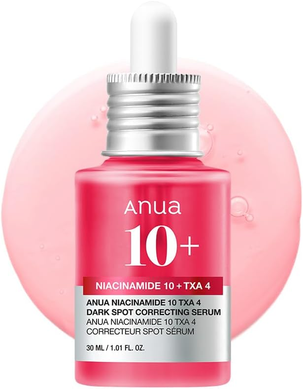
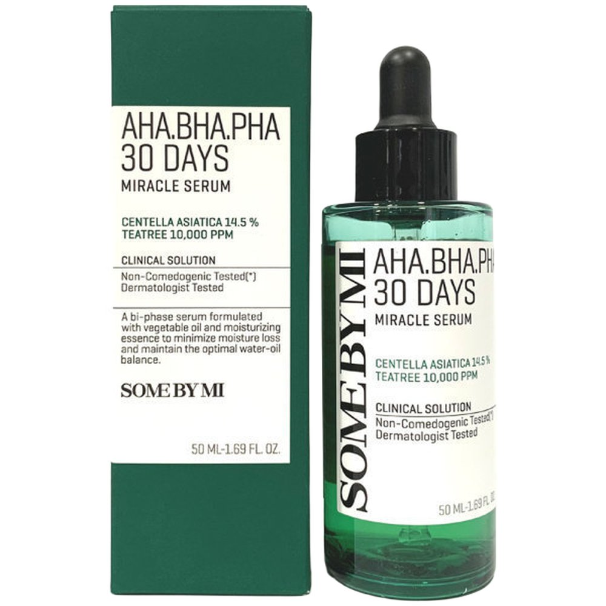
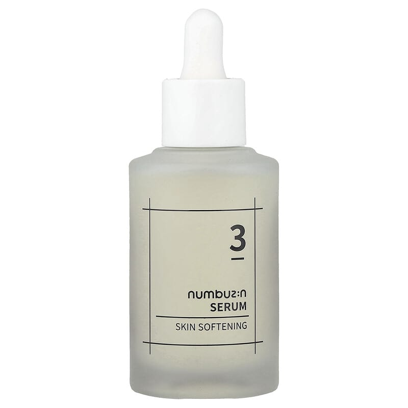

Home › Korean Serum
6 Best Korean Serums for Glass Skin (2026)
The Korean serums I actually recommend
I rounded up 6 Korean serum worth knowing — the ones K-beauty fans keep coming back to. Real products, honest notes, and roughly what they cost. Prices are approximate; check the retailer for today's price.

Glow Serum Propolis + Niacinamide
Glowy propolis serum that calms and brightens.
Propolis and niacinamide give a dewy, calmed finish while gently brightening over time. The lightweight texture layers well under sunscreen, making it a popular daily glow step for most skin types.
≈ $17.0 (approx) · Ships worldwide
Check price on Amazon →
The Vitamin C 23 Serum
Strong vitamin C for dark spots — a little goes far.
A high-strength 23% vitamin C serum aimed at dark spots and overall radiance. It's potent, so a small amount at night is plenty — best introduced slowly if you're new to vitamin C.
≈ $22.0 (approx) · Ships worldwide
Check price on Amazon →
Niacinamide 10% + TXA 4% Serum
Targets dullness and uneven tone; lightweight.
Niacinamide with tranexamic acid targets dullness, uneven tone and post-blemish marks. The watery, fast-absorbing texture suits oily and combination skin especially.
≈ $20.0 (approx) · Ships worldwide
Check price on Amazon →
Madagascar Centella Hyalu-Cica Serum
Soothing centella + hyaluronic for stressed skin.
Centella and hyaluronic acid calm redness while adding lightweight hydration. A gentle pick for sensitive or barrier-stressed skin that still wants a dewy finish.
≈ $20.0 (approx) · Ships worldwide
Check price on Amazon →
AHA BHA PHA 30 Days Miracle Serum
Gentle exfoliating serum for clearer, smoother skin.
A mild blend of AHA, BHA and PHA to smooth texture and keep pores clearer over time. Best used at night and always paired with daily sunscreen.
≈ $18.0 (approx) · Ships worldwide
Check price on Amazon →
No.3 Skin Softening Serum
A softening serum fans repurchase for smoother, glowier skin.
A softening serum with niacinamide and bifida ferment that many repurchase for smoother, glowier skin. Silky texture that sits well under makeup.
≈ $24.0 (approx) · Ships worldwide
Check price on Amazon →Save this for your next K-beauty haul
Prices are approximate and pulled from public shopping data; always check the retailer for the current price and shade/size before buying.